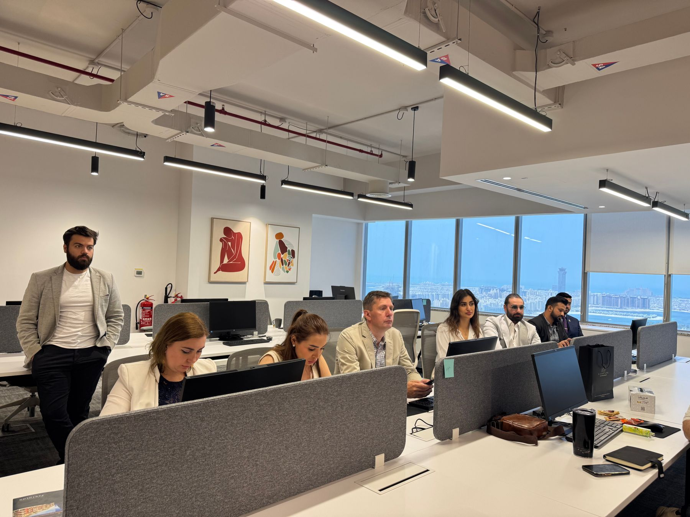

Recruitment process outsourcing · Saudi Arabia
Your recruitment function in Saudi Arabia, measured on SLAs.
An embedded recruitment team and AI-supported technology, with SLAs for time to fill, cost per hire, quality of hire and Saudization.
- 350+hires onboarded every month
- 44,000+Saudi national profiles
Lower cost per hire
Six month retention, our quality of hire measure
How TASC RPO works
A dedicated recruitment team does the work. AI-supported technology organises it, and the Control Tower shows how it is performing.
Delivered by your TASC team
A named RPO lead and a recruitment team sized to your hiring volume, scaled up or down as demand moves.
- RPO leadRecruitment leadership, reporting and process improvement
- SourcingFinding and engaging relevant candidates
- AssessmentScreening against your role requirements
- CoordinationInterviews, offers and candidate communication
- OnboardingJoining activities and documentation
Supported by TASC technology
Tools that organise the work and show where attention is needed. People make the decisions.
- HyrraAI-supported talent search and candidate flow
- RecruitifyRecruitment events, registration and attendance
- OnboardifyJoining requests and status
- Control TowerTime to fill, cost per hire, quality of hire and Saudization against agreed SLAs
Why TASC
Proven at volume
Our own recruitment team onboards 350+ people every month. For clients, we have onboarded 205 Saudi nationals in six weeks across 12+ cities.
Saudi talent at depth
44,000+ Saudi national profiles, with Saudization built into hiring plans from the start.
Capacity that flexes
Recruitment teams sized to your hiring plan and scaled up or down as demand moves, with hiring drives and events run on Recruitify.
Measured and visible
Agreed SLAs for time to fill, cost per hire, quality of hire and Saudization, reviewed with your team in the Control Tower.
TASC CONTROL TOWER
The TASC Control Tower
Human expertise, AI supported recruitment and one clear management view to help your business track hiring performance and act on what matters.
- See hiring performance
- Identify issues early
- Make informed decisions
TASC Control Tower
Sample dashboard · Demonstration data
Cost per hire
SAR 4,500Target ≤ SAR 5,000
Time to fill
28 daysAverage · target ≤ 30 days
Quality of hire
4.2/5Manager feedback · target ≥ 4.0
86% six month retention
Target ≥ 90%
Time to fill trend
Average days ┄ Target 30
NEEDS ATTENTION
Offer approval pending
Finance analyst · Hiring manager
Review the offer and record the decision.
THE SAUDI ADVANTAGE
Saudi recruitment expertise
From national hiring and specialist talent to recruitment across multiple cities, TASC brings local market knowledge into every stage of delivery.
- Saudi talent networks
- Saudization informed recruitment
- Specialist hiring across industries
CLIENT RESULTS
Volume hiring delivered in Saudi Arabia
From national hiring for retail and automotive launches to specialist technical recruitment at volume.
 Sector illustration
Sector illustrationAutomotive Manufacturing
Building specialist teams for a major manufacturing programme.
260+professionals hired
10,200 profiles screened. 1,088 candidates interviewed across four structured recruitment campaigns.
Read the case study Sector illustration
Sector illustrationAutomotive Retail
Coordinating Saudi recruitment across seven cities.
186Saudi nationals hired
Recruitment, onboarding and joining coordination across seven cities, with payroll in support.
Read the case studyClient experience · Saudi market entry
Recruitment support for a Saudi market launch.
Hear Nicholas Joseph, Operations Director at SenseTime, discuss working with TASC on recruitment, onboarding and launching across multiple locations in Saudi Arabia.
See all client resultsInsights
Insights from TASC
SAUDI ARABIA | HOSPITALITY | OCTOBER 2026Review edition
Hiring for a hotel opening in Saudi Arabia
Explore talent availability across front office, housekeeping and food service roles to support hospitality recruitment planning.

RPO INSIGHTS
Understanding recruitment process outsourcing (opens in a new tab)
Explore what an RPO partner does, the available models and questions to ask before choosing a provider.
Read article: Understanding recruitment process outsourcing (opens in a new tab)RPO INSIGHTS
Planning recruitment for a defined hiring requirement (opens in a new tab)
Understand how Project RPO can support a defined hiring requirement, such as an opening or expansion.
Read article: Planning recruitment for a defined hiring requirement (opens in a new tab)FAQs
What is Recruitment Process Outsourcing?
RPO is a model where an external partner manages agreed parts or all of a company's recruitment process. This can include sourcing, screening, interview coordination, onboarding support and recruitment performance reporting.
How is RPO different from using a recruitment agency?
A recruitment agency usually helps fill individual vacancies. An RPO partner manages a wider agreed recruitment process, often through dedicated teams, regular reporting and performance measures.
Will our team still make the final hiring decisions?
Yes. Your hiring managers retain control of final candidate selection and hiring approvals. TASC manages the recruitment activities agreed within the engagement.
Can TASC work with our existing recruitment systems?
TASC can review your current recruitment systems and agree how the delivery process will work alongside them. Any technical integration depends on the systems involved and the agreed service scope.
Can TASC support Saudization?
TASC supports Saudi national recruitment through local talent networks, recruitment market knowledge and planning around agreed national hiring requirements.
LET’S TALK
Talk to our RPO team
Let's discuss your hiring priorities and how TASC could support your recruitment function.